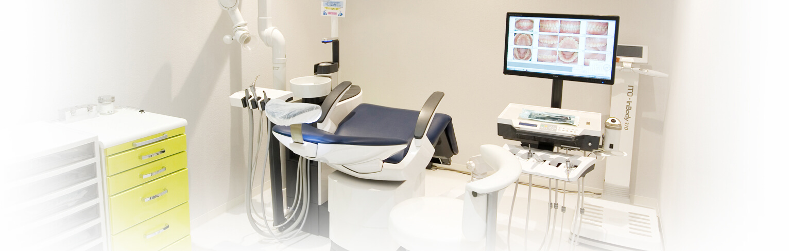
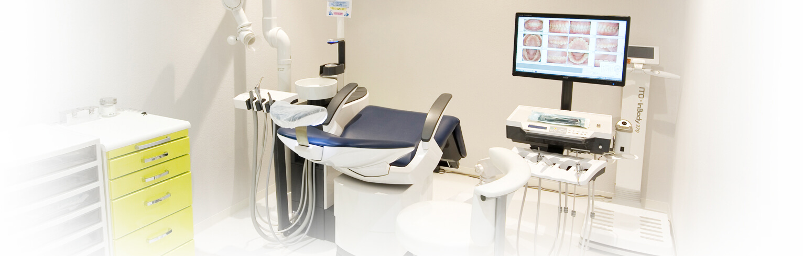
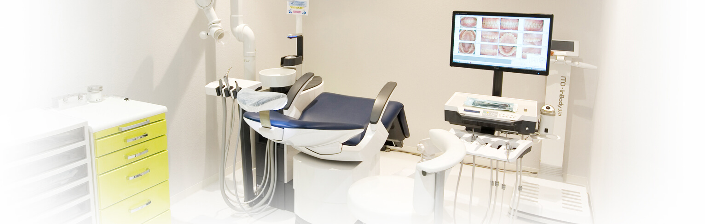

歯周病治療
 

秋葉原駅
徒歩3分

日本人が歯を失ってしまう原因の第1位は、虫歯ではなく歯周病です。日本では成人の約8割の人がすでに歯周病にかかっている、もしくは予備軍であるといわれています。歯周病は、歯と歯ぐきの間などで繁殖する歯周病菌によって歯の周りに炎症が起きる病気です。進行すると歯を支える顎の骨が溶かされてしまい、最悪の場合は歯が抜け落ちてしまいます。
歯周病の恐いところは、初期段階では自覚症状がほとんどないこと。「歯ぐきが腫れている」「ブラッシングのときに出血した」「歯がぐらついているように感じる」といった症状が出はじめたときには、すでにかなり進行してしまっている場合も多いのです。少しでも気になる症状があれば、千代田区秋葉原の歯医者「中川歯科クリニック」へご相談ください。
一般的に歯周病の治療は、歯石除去などの外科処置が基本です。歯石をとるには時間がかかり、出血や痛みをともなうことも少なくありません。また、歯石を除去しても歯ぐきの腫れや出血がおさまらなかったり、別の場所で再発してしまったりするケースもあります。外科治療だけで歯周病に完全に対処することは難しいのです。
こういった状況もふまえて、当院では位相差顕微鏡による検査と薬を用いた内科的治療を行っています。高精度の顕微鏡で歯周病の原因となる細菌を特定し、その菌を効果的に除去できる薬剤を用いることによって、歯周病を根本からかいぜんすることが可能です。痛みが苦手な方も、歯周病の治療が長引いている方も、お気軽にご相談ください。
歯周病が進行すると炎症がひどくなり、しまいには顎の骨が溶かされてしまいます。そのまま放っておくと歯がぐらつきはじめ、最悪の場合は歯が抜け落ちてしまいます。こうした重度の歯周病でも、当院なら対応可能な場合があります。あきらめずにご相談ください。
当院では患者様の歯周病の進行度合いに歯周組織の状態に合わせ、適切な治療を選択します。
※ただし、症状があまり進行している場合は改善が難しい場合があります。
歯周病の影響は、口腔内だけにとどまりません。以下のように、さまざまな病気につながる可能性がありますので、決して軽く見ないようにしましょう。
| 病気 | 歯周病が与える影響 |
|---|---|
|
心疾患 |
血管から侵入した歯周病菌が血栓をつくり、それによって血液の流れが悪くなることがあります。心臓内で動脈硬化が起こると、心筋梗塞や狭心症などの心疾患を招くリスクが高まります。 |
|
肺炎 |
歯周病菌が食べ物や唾液とともに誤って気管に流れ込むと、「誤嚥性肺炎（ごえんせいはいえん）」を引き起こすことがあります。肺炎は高齢者の死亡率で上位にくる恐い病気です。 |
|
糖尿病 |
歯周病と糖尿病は密接な関わりがあります。糖尿病が歯周病を引き起こしたり、歯周病が糖尿病を悪化させたりすることがあります。 |
|
早産・低体重児出産 |
血管から侵入した歯周病菌が、子宮で陣痛と似た筋肉収縮を引き起こすことがあります。これによって早産や低体重児出産のリスクが高まります。 |
歯周病は免疫力との関係が深く、生活習慣病のひとつとされています。とくに次のような生活習慣がある方は、歯周病になるリスクが高いといわれています。ご自身の生活習慣を見直して、歯周病予防を心がけましょう。
| 生活習慣 | 歯周病にかかるリスク |
|---|---|
|
喫煙する |
タバコの有害物質が口腔内の粘膜や歯ぐきから吸収されると、歯周病にかかりやすくなります。 |
|
間食が多い |
口腔内が食べかすなどで汚れている時間が長いと、歯周病菌が繁殖しやすくなります。 |
|
よく噛んで食べない |
食べ物を噛む回数が少ないと唾液が分泌されにくくなるので、歯周病菌が繁殖しやすくなります。 |
|
ストレスが多い |
疲れやストレスは、免疫力が低下する原因。疲れやストレスが溜まっていると、あらゆる感染症にかかりやすくなります。 |
歯を失う原因の第1位である歯周病は、身体への悪影響も多く、一度進行してしまうとなかなか簡単に完治させることは難しくなっていきます。歯周病になる前に、予防歯科の習慣を身につけて、虫歯や歯周病に悩まされないように対策することを推奨しています。
予防歯科についてはこちら 唾液検査についてはこちら 子どもの予防歯科についてはこちら| 診療時間 | 月 | 火 | 水 | 木 | 金 | 土 | 日(祝) |
|---|---|---|---|---|---|---|---|
| 9:30 〜 13:00 | ◯ | ◯ | ◯ | ー | ◯ | ◯ | ー |
| 14:00 〜 19:00 | ◯ | ● | ◯ | ー | ◯ | △ | ー |
● … 14:00 〜 18:00 △ … 14:00 〜 16:00 の診療時間になります。
● … 14:00 〜 18:00
△ … 14:00 〜 16:00 の診療時間になります。